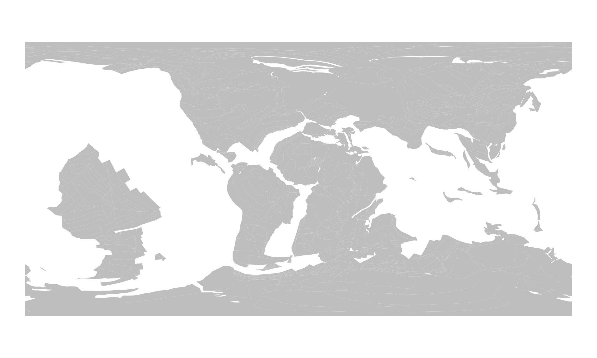
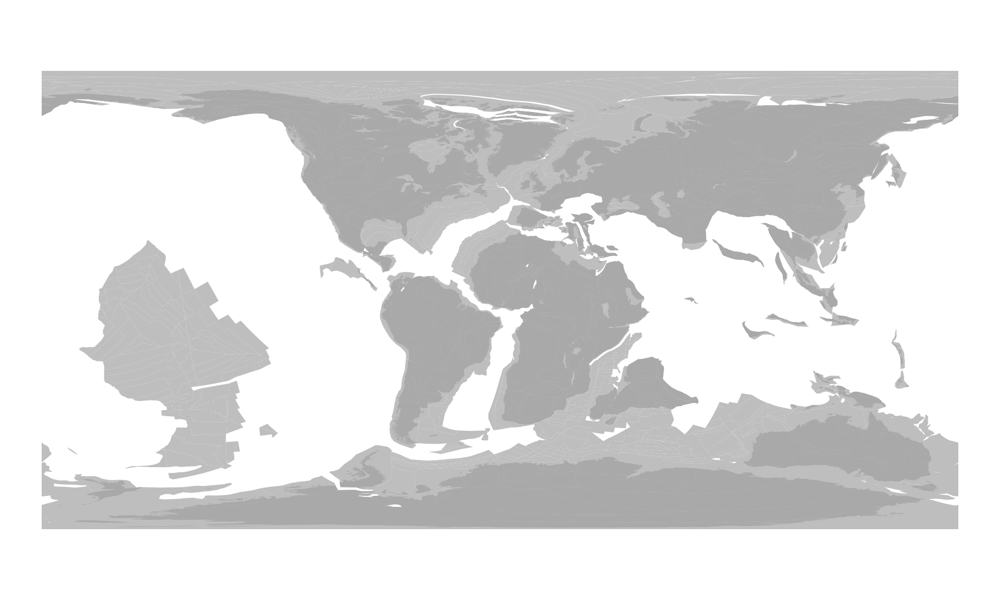
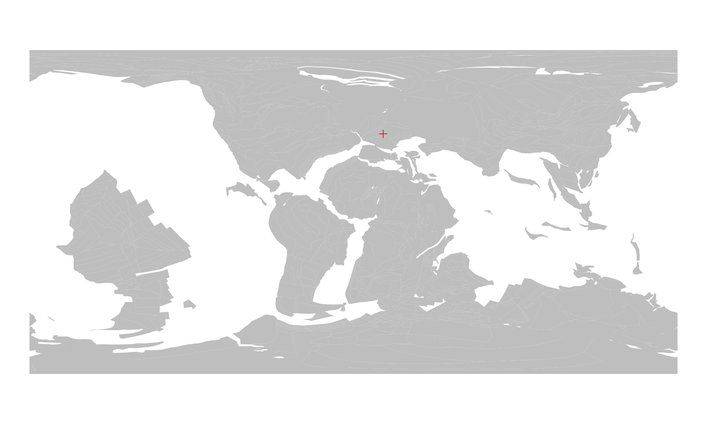
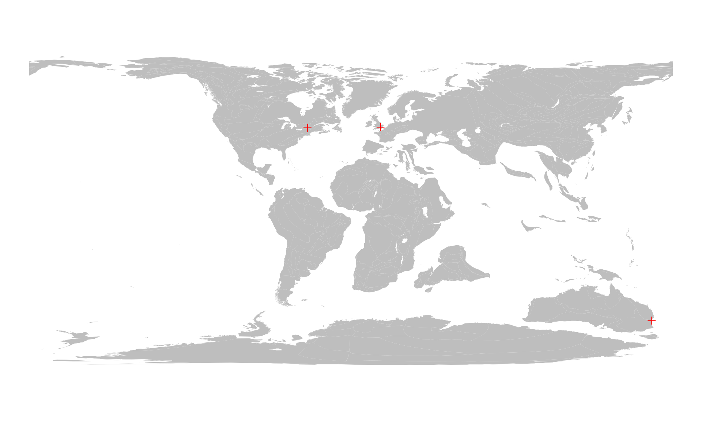
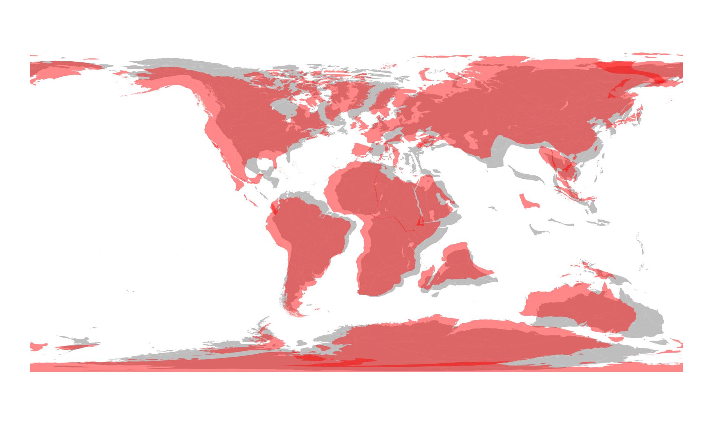

2. Reconstructions using modern coordinates (online)
Source:vignettes/2_online_reconstruction_backwards.Rmd
2_online_reconstruction_backwards.RmdOut of the box, the package relies on the GPlates Web Service (GWS), an
online service that executes paleogeographic rotations
using data provided in URLs. rgplates (1)
sends the data to the GWS, which (2) calculates
paleocoordinates, and then (3) rgplates
reads in the returned result. For this online method, you have
to be connected to the internet.
To start, you have to attach the package:
library(rgplates)
#> Loading required package: sf
#> Linking to GEOS 3.10.2, GDAL 3.4.1, PROJ 8.2.1; sf_use_s2() is TRUEWhen attached, rgplates automatically loads the Simple
Features for R (sf) package, a standard R package
used for processing vector spatial data.
Reconstructing plates
All paleocoordinate rotations are executed with the
reconstruct() function. The default model used by this is
the Merdith
et al. 2021, described here.
(If you look at the reference of reconstruct(), you can
see that by default model="MERDITH2021").
Every tectonic model relies on plates, which are rotated on the
surface of Earth. Plate positions) can be reconstructed to any age that
the model covers. The present-day positions of the plates can be queried
with the reconstruct() function, with a string passed
(static_plates or plate_polygons, depending on
the model) as the first argument, and the target age set to
0 (in Ma).
pl0 <- reconstruct("static_polygons", age=0)
pl0
#> Simple feature collection with 2391 features and 0 fields
#> Geometry type: POLYGON
#> Dimension: XY
#> Bounding box: xmin: -179.99 ymin: -89.99 xmax: 179.99 ymax: 89.99
#> Geodetic CRS: WGS 84
#> First 10 features:
#> geometry
#> 1 POLYGON ((112.0797 39.2348,...
#> 2 POLYGON ((119.2562 36.6774,...
#> 3 POLYGON ((130.47 41.99, 130...
#> 4 POLYGON ((104.7254 40.4621,...
#> 5 POLYGON ((102.6257 37.6989,...
#> 6 POLYGON ((104.6209 38.9799,...
#> 7 POLYGON ((94.0783 73.2609, ...
#> 8 POLYGON ((122.0576 66.9608,...
#> 9 POLYGON ((119.9099 61.8243,...
#> 10 POLYGON ((105.7441 72.3461,...The rgplates package relies on sf
to handle vector spatial data - like the plates. You can do anything
with this that you normally can with and sf object:
manipulate it, change its map projection, export or use it for
calculations. These data are in standard equirectangular
projection, registered with longitude and latitude data in the
WGS84 Coordinate Reference System.
You can plot the distribution of plates with the plot()
function. To focus on the spatial data and not the attributes of the
features (which are technical in nature), you can plot the geometries of
this object.
plot(pl0$geometry)Setting the age argument allows you to access the state
of the plate tectonic configuration at past points in time. The
age argument accepts dates in millions of years. To
reconstruct the position of the plates at around the Early/Late
Cretaceous boundary (approx. 100Ma), you have to set the
age argument to 100:
pl100 <- reconstruct("static_polygons", age=100)
pl100
#> Simple feature collection with 1042 features and 0 fields
#> Geometry type: POLYGON
#> Dimension: XY
#> Bounding box: xmin: -179.99 ymin: -89.99 xmax: 179.99 ymax: 89.99
#> Geodetic CRS: WGS 84
#> First 10 features:
#> geometry
#> 1 POLYGON ((123.8607 43.0607,...
#> 2 POLYGON ((131.9549 41.4295,...
#> 3 POLYGON ((142.9576 47.937, ...
#> 4 POLYGON ((115.9434 43.2923,...
#> 5 POLYGON ((114.4442 40.2853,...
#> 6 POLYGON ((116.192 41.8191, ...
#> 7 POLYGON ((84.8005 73.1575, ...
#> 8 POLYGON ((121.8271 71.3283,...
#> 9 POLYGON ((123.7043 66.1533,...
#> 10 POLYGON ((97.0729 73.9899, ...You can plot the results in a similar way:
plot(pl100$geometry)Reconstructing modern coastlines
Note that the result includes oceanic plates as well, which can be
quite distracting when you want to visualize past distribution of the
continents. To help with this, the paleogeographic positions of the
present-day coastlines (and plate margins) can be quite helpful, which
can be accessed, by providing "coastlines" as the first
argument of the reconstruct() function:
c0 <- reconstruct("coastlines", age=0)
c100 <- reconstruct("coastlines", age=100)
c100
#> Simple feature collection with 2451 features and 0 fields
#> Geometry type: POLYGON
#> Dimension: XY
#> Bounding box: xmin: -179.99 ymin: -89.3928 xmax: 179.99 ymax: 83.1004
#> Geodetic CRS: WGS 84
#> First 10 features:
#> geometry
#> 1 POLYGON ((132.3511 47.0744,...
#> 2 POLYGON ((141.963 46.5718, ...
#> 3 POLYGON ((134.1119 44.0571,...
#> 4 POLYGON ((134.1819 42.4726,...
#> 5 POLYGON ((133.5996 44.4895,...
#> 6 POLYGON ((142.7117 48.1375,...
#> 7 POLYGON ((133.7077 44.7113,...
#> 8 POLYGON ((133.5384 44.3543,...
#> 9 POLYGON ((132.7962 42.5404,...
#> 10 POLYGON ((132.486 42.1309, ...You can visalize these in the same way:
plot(c100$geometry)
Again, the pl0 and pl100 and
c100 objects are sf-class objects. You can
customize their plotting as you would for any other sf
object - for instance setting a fill color for the polygons and not
plotting their boundaries.
plot(pl100$geometry, col="gray", border=NA)
You can easily plot them on top of each other:
plot(pl100$geometry, col="gray", border=NA)
plot(c100$geometry, col="darkgray", border=NA, add=TRUE)
Individual locations
This is nice, but plotting the plates on their own has only so much
use. The true use of reconstruct() is the ability to
calculate the paleocoordinates of present-day locations for a given
age.
Single present-day point
Let’s consider the location of London (here
it is on Google maps)! Either in the URL, or with the user interface
of Google maps, you can find that the coordinates of the city center are
around 51.52°N (latitude) and 0.38°W (longitude). To figure out where
the city was at the Triassic/Jurassic boundary you need to:
(1) register these coordinates in R; and
(2) provide them to the reconstruct()
function.
Note that we are dealing with global-scale, approximate coordinates here. For more precise results, always make sure that the CRS of the points is matching the CRS of the maps (including ellipses)!
Because with the usually used equirectangular projection the x-axis of plotting become longitude, and the y axis becomes latitude, we usually register the coordinates in the order of longitude first, and latitude second (with easting longitudes and northing latitudes registered as positive values).
To make this structure absolutely clear, it is best to register coordinates as 2-column matrices, with longitude being the first, and latitude the second column:
# the coordinates
london <- c(-0.38, 51.52)
# make it a matrix
londonMat <- matrix(london, ncol=2, byrow=TRUE)
# add column names (optional)
colnames(londonMat) <- c("long", "lat")
londonMat
#> long lat
#> [1,] -0.38 51.52Since the coordinate reference system (CRS) of the maps is
longitude-latitude, you can use these coordinates directly to indicate
the positionx of the city on the present-day map using
points() - in this case with red plus signs:
Paleocoordinates of a single locality
Finding the paleocoordinates of such localities is as easy as
calculating those of the plates. You have to use the matrix that you
defined earlier (londonMat) as the first argument, of
reconstruct() (where "static_polygons" and
"coastlines" were given earlier), and provide a target age
in million years:
londonMat100 <- reconstruct(londonMat, age=100)
londonMat100
#> paleolong paleolat
#> [1,] 16.501 43.4247The result of this calculation is a similar matrix: now
including the paleolongitude and paleolatitude columns. If you provide
coordinates as a plain matrix, coordinates are inferred to
be longitude and latitude.
You can visualize this the same way, as you visualized the present-day position of the location:

Paleocoordinates of a multiple localities
If you want to reconstruct multiple locations, all you need to provide is more rows in the matrix. For instance, if you also want to calculate the positions of Sydney, AU (33.85°S, 151.11°E) and Montréal (CA) (45.52°N, 73.61°W), you need to add these in a similar fashion.
# coordinates of the two other cities
sydney<- c(151.17, -33.85)
montreal<- c(-73.61, 45.52)
# all cities in a single matrix
cities<- rbind(london, sydney, montreal)
#optional column names
colnames(cities) <- c("long", "lat")
cities
#> long lat
#> london -0.38 51.52
#> sydney 151.17 -33.85
#> montreal -73.61 45.52Now that we have a matrix of longitudes and latitudes, all we need to
do is use this as the first argument of the reconstruct()
function:
cities100 <- reconstruct(cities, age=100)
cities100
#> paleolong paleolat
#> london 16.5010 43.4247
#> sydney 168.1989 -64.7057
#> montreal -24.3468 43.0799Note that the order of entities remains the same. We can plot these the same way similar to a single city.
# the background map
plot(c100$geometry, col="gray", border=NA)
# the reconstructed cities
points(cities100, col="red", pch=3)
Other reconstruction models
If you look into the Details of the
reference of reconstruct(), you will see that the
model argument can be set to other character strings
besides "MERDITH2021". These indicate other models that are
accessible via the GPLates Web Service. For instance, if you want to
execute the same calculations to reconstruct the position position of the
plates at 100Ma, with the Seton et al. 2012 model, all you have to
do is set model="SETON2012":
c100seton <- reconstruct("coastlines", age=100, model="SETON2012")
c100seton
#> Simple feature collection with 1893 features and 0 fields
#> Geometry type: POLYGON
#> Dimension: XY
#> Bounding box: xmin: -179.99 ymin: -89.99 xmax: 179.99 ymax: 85.6335
#> Geodetic CRS: WGS 84
#> First 10 features:
#> geometry
#> 1 POLYGON ((-10.7862 27.3367,...
#> 2 POLYGON ((-141.3289 -23.446...
#> 3 POLYGON ((-60.5945 5.9602, ...
#> 4 POLYGON ((-59.9848 4.8269, ...
#> 5 POLYGON ((-36.5397 16.789, ...
#> 6 POLYGON ((-36.7068 16.8855,...
#> 7 POLYGON ((-36.494 16.7124, ...
#> 8 POLYGON ((-36.3418 16.5887,...
#> 9 POLYGON ((-12.5495 22.9016,...
#> 10 POLYGON ((-10.4138 22.3064,...You can compare this with the Merdith et al. model, by plotting this
result on top of that with some transparency (e.g. a semi-transparent
red, in HTML
RGBA: "#FF000077"):
plot(c100$geometry, col="gray", border=NA)
plot(c100seton$geometry, col="#FF000077", add=TRUE, border=NA)
You can see that the the two reconstructions differ quite a bit, which becomes more apparent as we go back in time. Also, with the transparency, you can see how the plates overlap in convergent zones.